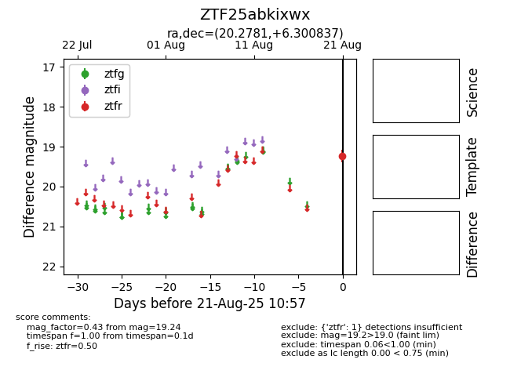

Target ZTF25abkixwx at 2025-08-21 10:57, see:
FINK: fink-portal.org/ZTF25abkixwx
Lasair: lasair-ztf.lsst.ac.uk/objects/ZTF25abkixwx
ALeRCE: alerce.online/object/ZTF25abkixwx
alt names
ZTF25abkixwx (ztf,alerce)
coordinates:
equatorial (ra, dec) = (20.2781,+6.30084)
galactic (l, b) = (136.1334,-55.80844)
photometry
last ztfr=19.24
1 ztfr detections
